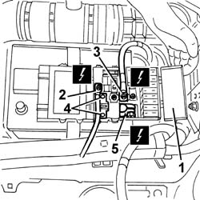
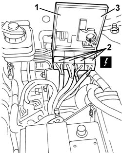

5030B40 supply box on battery (link battery and fuse box) - r r
- Path
- Procedures > 55 ELECTRICAL EQUIPMENT > 5530 CURRENT GENERATOR > 5530B battery and leads > 5030B40 supply box on battery (link battery and fuse box) - r r
- Kind
- repair procedure (removal / refitting; the operation number is the code)
- Applies to
- all engines; all production periods
- Interactive page
- https://sloeber94.github.io/elrnDB-a156/en/#/3238434
Applies to: all engines; production: da 03/99 a 01/00, da 02/01 a 02/02, da 03/02 a 09/03, da 10/03
 Removing
Removing
 Refitting
RefittingDisconnect the battery negative terminal.
1. Open the protective cover
2. Loosen the nut and disconnect the ABS supply lead
 | Name | Connector |
|---|---|---|
2 | Battery |
3. Loosen the nut and disconnect the starter motor supply lead
| Name | Connector |
|---|---|---|
3 | Battery |
4. Undo the clip and undo the box retaining bolts.
5. Loosen the battery positive terminal nut.
| Name | Connector |
|---|---|---|
5 | Battery |

Applies to: all engines; production: da 03/99 a 01/00, da 02/01 a 02/02, da 03/02 a 09/03, da 10/03
1. Lift the supply box
2. Disconect the maxi fuse electrical connections.
| Name | Connector |
|---|---|---|
2 | Maxifuse box on battery |
3. Recover the supply box

Applies to: all engines; production: da 03/99 a 01/00, da 02/01 a 02/02, da 03/02 a 09/03, da 10/03
Refitting
RemovingCheck the supply box is intact and that the electrical connection terminals are not contaminated or oxidised.
Connect the maxi fuse electrical connections.
Position the supply box in its seat and secure the battery maxi fuse.
Tighten the retaining nut and bolt.
Do up the clip.
Connect the starter motor and ABS supply leads.
Close the protective cover and connect the battery negative terminal.
Test the electrical system.